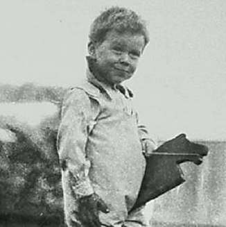
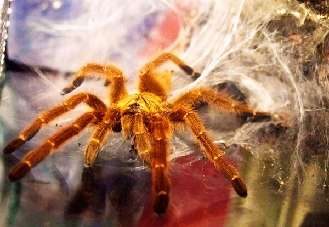

Борис Акунин
Мой календарь
В третий день нового года пора спуститься с небес на землю и задуматься об опасностях и неприятностях, без которых, увы, тоже не обойдется.
И здесь нам поможет Джон Рональд Толкин, родившийся в 1892 году в этот холодный день. (Кстати сказать, Толкин - любимый писатель нашего вчерашнего вдохновителя Айзека Азимова).
Нам помогут не «Легендариум», не хоббиты и не властелины колец, а жуткий инцидент, случившийся, когда маленький Джон в очень раннем возрасте - так сказать, в начале января жизни - гулял по саду. (Дело происходило в Южной Африке)
Будущий гений, а тогда просто карапуз, был укушен вот этой тварью:
Это ядовитый-преядовитый паук-бабуин, разновидность тарантула.
Как вы догадываетесь, ребенок не умер. И очень возможно (есть у толкинистов такая версия), ядовитый укус каким-то фантасмагорическим образом дал толчок развитию весьма причудливого таланта.
Берите пример с Толкина. Если вас укусит какая-нибудь ядовитая пакость (обязательно укусит, как же без этого), считайте это инъекцией. Яд усвоится и трансформируется в сыворотку гениальности. Или, по крайней мере, подтолкнет вас к чему-то созидательному.
Интересно, что в зрелые годы Толкин совершенно не страдал арахнофобией (страхом перед пауками). Видимо, испытывал к мохнатоногим благодарность.
В общем, не боимся пауков и помним китайскую мудрость: